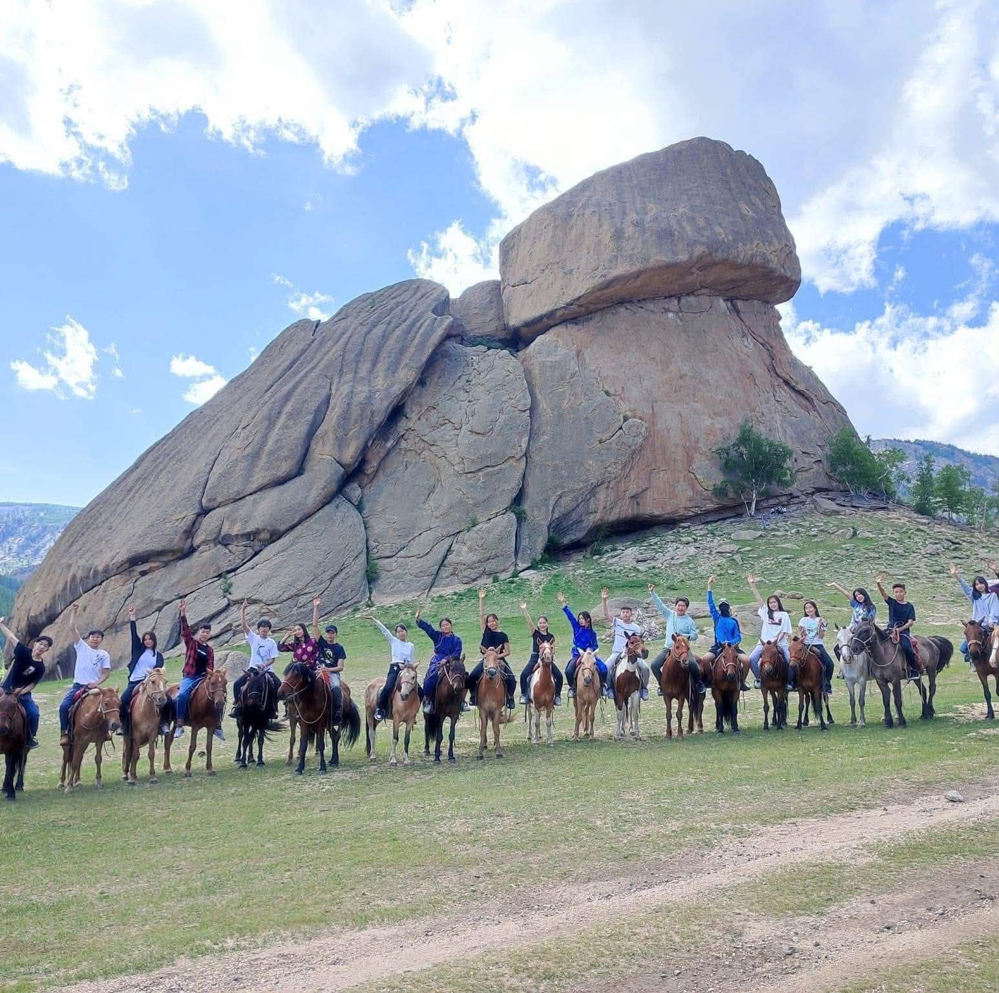
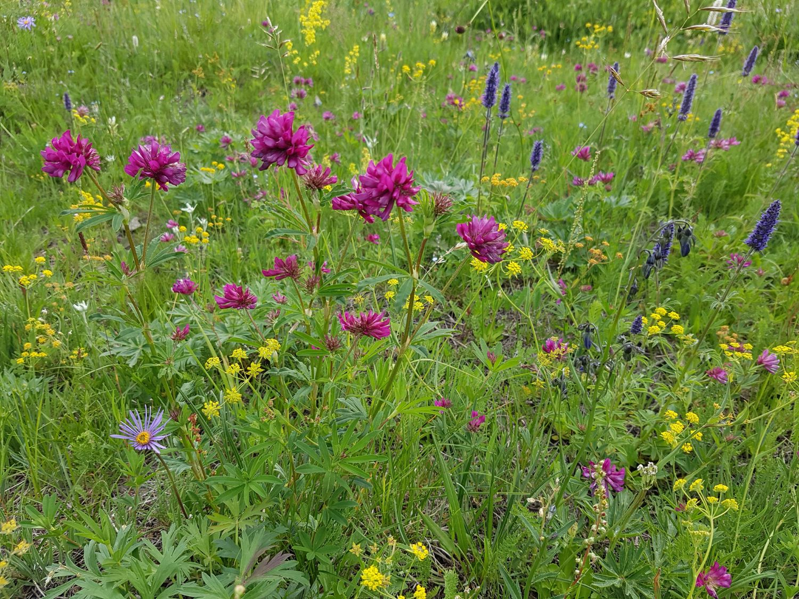

基本情報
- 催行期間：6月上旬〜8月下旬
- 発着地：ウランバートル市内ホテル
- 食事：昼食1回
亀岩、アリヤバル寺院、奥テレルジの花畑を巡ります。
ウランバートルから専用車でテレルジ国立公園へ。亀岩、アリヤバル寺院、ゲルキャンプ周辺の花畑を訪ねる、初心者にも参加しやすい日帰りコースです。
岩山と草原の景色を背景に、季節の草花を観察します。
アリヤバル寺院へ向かう小道を歩き、野花と谷の景色を楽しみます。
奥テレルジのゲルキャンプ周辺で、ゆったり花畑を散策します。
| 日程 | 行程 | 宿泊 |
|---|---|---|
| 1日目 | ウランバートル → テレルジ国立公園 → ウランバートル 午前：市内ホテルへお迎え後、専用車でテレルジ国立公園へ。草原と岩山の景色を眺めながら亀岩を観光します。 午後：アリヤバル寺院へ向かう小道を歩き、季節の野花を観察。昼食後は奥テレルジのゲルキャンプ周辺で花畑と草原を散策し、夕方に市内へ戻ります。 | 日帰り 宿泊なし |
※花の開花状況や寺院への歩行ルートは、天候・現地事情により変更となる場合があります。
2〜3名で催行の場合は追加料金￥45,000／一人、1名催行は追加料金￥50,000です。12歳以下は30％割引です。
はい。約3〜4kmのゆったりした日帰りコースです。ガイドが参加者のペースに合わせてご案内します。
昼食のみ含まれます。朝食と夕食は含まれません。
例年6月上旬から8月下旬が目安です。天候により開花状況は変わります。

